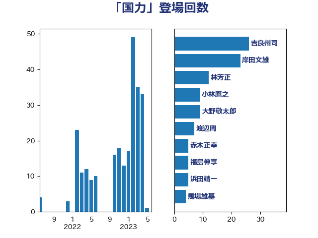

単語「国力」

| 吉良州司 | 無所属 | 26 回 |
| 岸田文雄 | 自由民主党 | 23 回 |
| 林芳正 | 自由民主党 | 12 回 |
| 小林鷹之 | 自由民主党 | 9 回 |
| 大野敬太郎 | 自由民主党 | 9 回 |
| 渡辺周 | 立憲民主党 | 7 回 |
| 赤木正幸 | 日本維新の会 | 5 回 |
| 福島伸享 | 無所属 | 5 回 |
| 浜田靖一 | 自由民主党 | 5 回 |
| 馬場雄基 | 立憲民主党 | 4 回 |
| 階猛 | 立憲民主党 | 4 回 |
| 茂木敏充 | 自由民主党 | 3 回 |
| 尾身朝子 | 自由民主党 | 3 回 |
| 大島九州男 | れいわ新選組 | 3 回 |
| 青山大人 | 立憲民主党 | 2 回 |
| 鈴木俊一 | 自由民主党 | 2 回 |
| 金村龍那 | 日本維新の会 | 2 回 |
| 野田佳彦 | 立憲民主党 | 2 回 |
| 赤池誠章 | 自由民主党 | 2 回 |
| 藤井比早之 | 自由民主党 | 2 回 |
| 穂坂泰 | 自由民主党 | 2 回 |
| 福田昭夫 | 立憲民主党 | 2 回 |
| 櫛渕万里 | れいわ新選組 | 2 回 |
| 松野博一 | 自由民主党 | 2 回 |
| 杉本和巳 | 日本維新の会 | 2 回 |
| 星野剛士 | 自由民主党 | 2 回 |
| 市村浩一郎 | 日本維新の会 | 2 回 |
| 岬麻紀 | 日本維新の会 | 2 回 |
| 小西洋之 | 立憲民主党 | 2 回 |
| 古川元久 | 国民民主党 | 2 回 |
| 伴野豊 | 立憲民主党 | 2 回 |
| 中川郁子 | 自由民主党 | 2 回 |
| 上月良祐 | 自由民主党 | 2 回 |
| 三浦信祐 | 公明党 | 2 回 |
| 三木圭恵 | 日本維新の会 | 2 回 |
| 高橋光男 | 公明党 | 1 回 |
| 高木啓 | 自由民主党 | 1 回 |
| 長坂康正 | 自由民主党 | 1 回 |
| 鎌田さゆり | 立憲民主党 | 1 回 |
| 鈴木敦 | 国民民主党 | 1 回 |
| 鈴木庸介 | 立憲民主党 | 1 回 |
| 金子道仁 | 日本維新の会 | 1 回 |
| 金城泰邦 | 公明党 | 1 回 |
| 野間健 | 立憲民主党 | 1 回 |
| 辻清人 | 自由民主党 | 1 回 |
| 足立康史 | 日本維新の会 | 1 回 |
| 赤澤亮正 | 自由民主党 | 1 回 |
| 衛藤晟一 | 自由民主党 | 1 回 |
| 萩生田光一 | 自由民主党 | 1 回 |
| 舞立昇治 | 自由民主党 | 1 回 |
| 羽田次郎 | 立憲民主党 | 1 回 |
| 福山哲郎 | 立憲民主党 | 1 回 |
| 石破茂 | 自由民主党 | 1 回 |
| 石川大我 | 立憲民主党 | 1 回 |
| 石井浩郎 | 自由民主党 | 1 回 |
| 矢倉克夫 | 公明党 | 1 回 |
| 田嶋要 | 立憲民主党 | 1 回 |
| 玉木雄一郎 | 国民民主党 | 1 回 |
| 滝波宏文 | 自由民主党 | 1 回 |
| 清水貴之 | 日本維新の会 | 1 回 |
| 浜地雅一 | 公明党 | 1 回 |
| 河西宏一 | 公明党 | 1 回 |
| 櫻井周 | 立憲民主党 | 1 回 |
| 横山信一 | 公明党 | 1 回 |
| 榛葉賀津也 | 国民民主党 | 1 回 |
| 柴愼一 | 立憲民主党 | 1 回 |
| 柳ヶ瀬裕文 | 日本維新の会 | 1 回 |
| 松原仁 | 立憲民主党 | 1 回 |
| 松下新平 | 自由民主党 | 1 回 |
| 東徹 | 日本維新の会 | 1 回 |
| 東国幹 | 自由民主党 | 1 回 |
| 木村次郎 | 自由民主党 | 1 回 |
| 斎藤アレックス | 国民民主党 | 1 回 |
| 斉藤鉄夫 | 公明党 | 1 回 |
| 平沼正二郎 | 自由民主党 | 1 回 |
| 山谷えり子 | 自由民主党 | 1 回 |
| 山田美樹 | 自由民主党 | 1 回 |
| 小山展弘 | 立憲民主党 | 1 回 |
| 宮路拓馬 | 自由民主党 | 1 回 |
| 宮本徹 | 日本共産党 | 1 回 |
| 大塚耕平 | 国民民主党 | 1 回 |
| 吉田豊史 | 無所属 | 1 回 |
| 吉田宣弘 | 公明党 | 1 回 |
| 古賀友一郎 | 自由民主党 | 1 回 |
| 古川禎久 | 自由民主党 | 1 回 |
| 北神圭朗 | 無所属 | 1 回 |
| 北村経夫 | 自由民主党 | 1 回 |
| 務台俊介 | 自由民主党 | 1 回 |
| 加藤鮎子 | 自由民主党 | 1 回 |
| 前原誠司 | 国民民主党 | 1 回 |
| 佐藤英道 | 公明党 | 1 回 |
| 佐藤正久 | 自由民主党 | 1 回 |
| 伊波洋一 | 無所属 | 1 回 |
| 仁木博文 | 無所属 | 1 回 |
| 丸川珠代 | 自由民主党 | 1 回 |
| 串田誠一 | 日本維新の会 | 1 回 |
| 中谷一馬 | 立憲民主党 | 1 回 |
| 中曽根康隆 | 自由民主党 | 1 回 |
| 中川正春 | 立憲民主党 | 1 回 |
| 中島克仁 | 立憲民主党 | 1 回 |
| 上川陽子 | 自由民主党 | 1 回 |